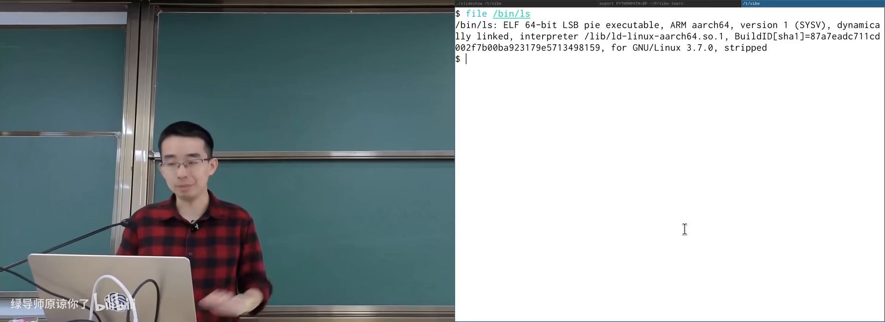
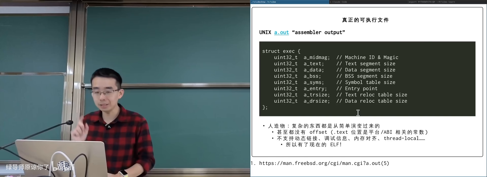
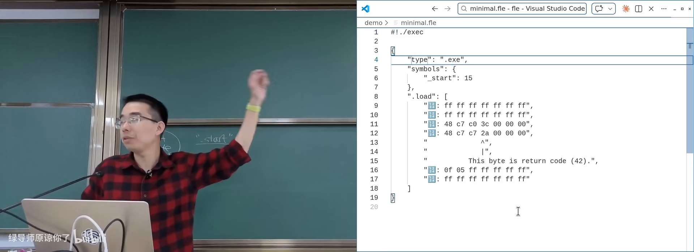
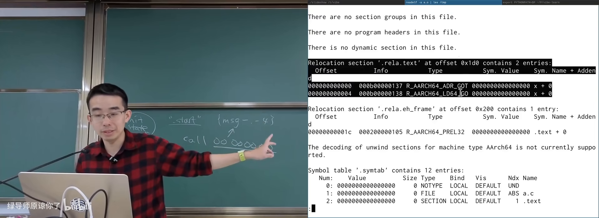
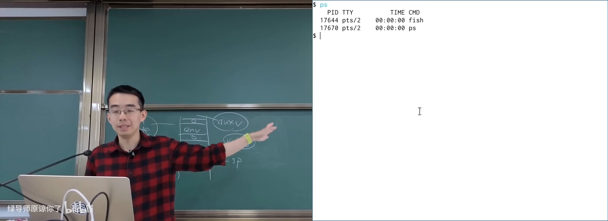
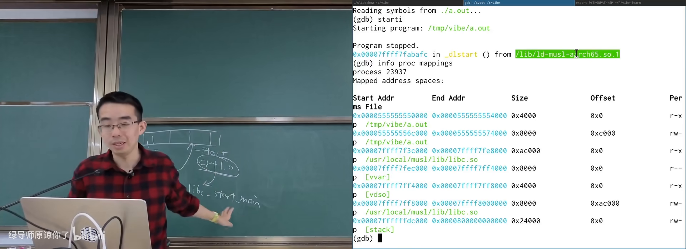
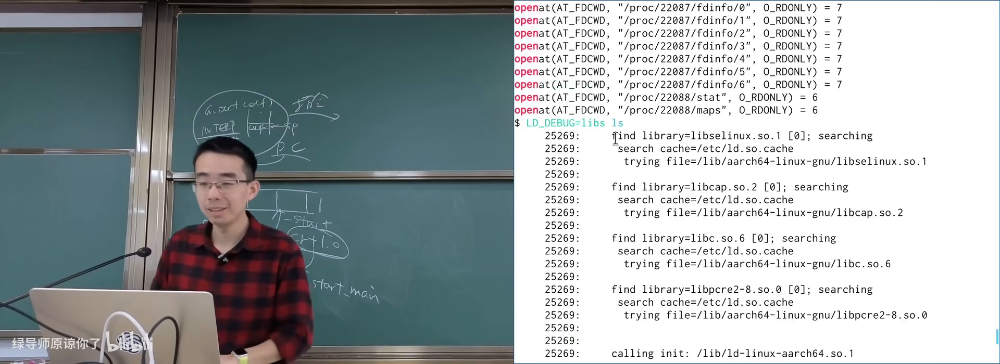
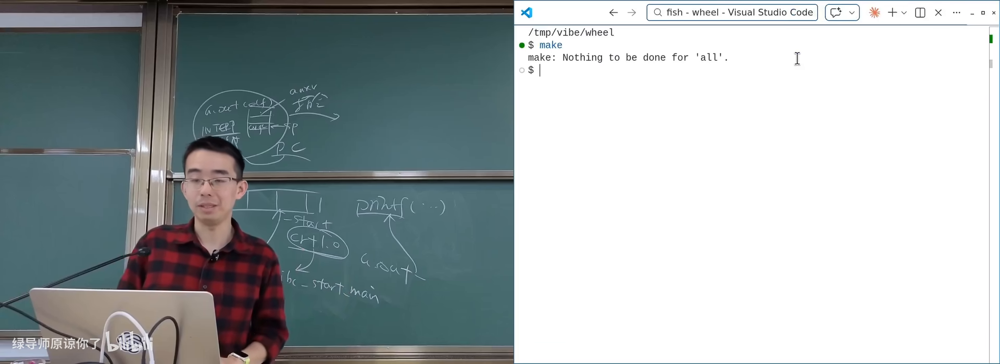
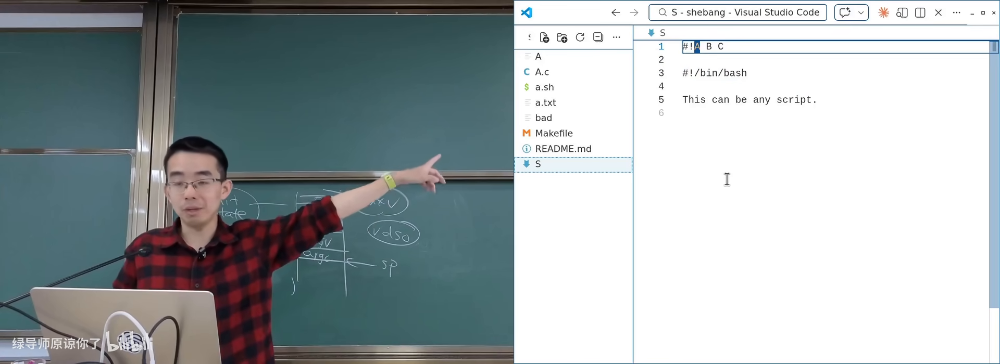

原视频：Bilibili · BV1CoDzB5Eey（时长约 89 分钟） 课程：南京大学《操作系统原理》（2026）第 11 讲 整理说明：本书由视频语音转录后经 AI 重构而成；口语已转为书面语；关键时间点标注 (参考时间)，截图占位对应视频位置。
1. 可执行文件究竟是什么
(参考时间: 00:00)
课程一直在系统调用之上堆叠应用世界。本讲对象是链接和加载——仍然建立在系统调用之上，但视角从「API 怎么用」变成「程序文件如何变成进程」。
学操作系统前，可执行文件是「双击能弹出窗口」的东西；学完之后更精确的定义是：
可执行文件是描述进程初始内存布局的数据结构。
它本身只是操作系统里的一个普通文件：可用 file、cat、十六进制查看器打开；文件头常见 7f 45 4c 46（ELF 魔数）。

file/十六进制查看可执行文件在 B 站打开 (00:01:10)
图：可关注 ELF 魔数与「它只是文件」这一点。
1.1 execve 与进程初始状态
execve(path, argv, envp) 手册写作 execute program。path 指向可执行文件；内核加载器据此：
- 布置 initial process stack（argc/argv/envp/auxv）；
- 按文件中的 program header 把代码、数据、BSS 等映射进地址空间并设定权限。
真正「可执行」的是进程；文件只是初始状态的蓝图。
1.2 从 a.out 到 ELF
早期 UNIX 的 a.out（assembler output，汇编器输出）格式很简：结构体小，甚至没有显式 offset——加载地址由平台 ABI 硬编码。它也不支持动态链接、调试信息、thread-local 等后来需求。
功能不断膨胀后，演进为今天的 ELF（Executable and Linkable Format，可执行与可链接格式）。复杂度的根源是：ELF 为机器效率设计——字符串身首异处、用 offset/索引、权限等信息压成 bit field，机器读很高效，人读则痛苦。

a.out 结构 vs ELF 复杂度在 B 站打开 (00:06:00)
1.3 等价描述：Funny Little Executable
课程坚持一个方法论：
总可以在等价的描述形式之间转换。
于是不必死磕 ELF 的 offset 迷宫，而可以自定义「人眼友好的可执行描述」，再实现链接器与加载器。主讲人多年迭代的 Funny Little Executable 使用 JSON（或 Markdown）表达：
- 可执行文件身份；
- 符号（如
_start在何处）； - 指令序列；
- 导出/待改写的符号；
- 重定位表达式。
链接的本质被摊平成：算出一个数字，填进指令里预留的位置。例如 x86 call 可先编译成 call 0x00000000，链接时把「目标地址 − 当前指令下一条地址」填入 PC-relative 立即数。
flowchart LR
subgraph 编译后目标文件
A["call 0 (占位)"]
B["重定位项: msg_end - msg - 4"]
end
C["链接器: 符号都定址"]
D["算出立即数并填入"]
E["可执行文件可加载"]
A --> C --> D --> E
B --> C

JSON/Markdown 形式的可执行描述在 B 站打开 (00:15:20)
2. 静态链接与加载
(参考时间: 00:22:40)
2.1 链接在做什么
编译 extern int x; 的 main 时，引用外部符号的指令会留下空位。若链接时找不到符号定义，链接器报错；找得到则按重定位类型填入正确数值。
readelf -A 的 .text relocation、反汇编中的零立即数，都是「以后再填」的痕迹。

readelf 重定位项与占位立即数在 B 站打开 (00:24:40)
2.2 加载在做什么
加载即：按描述把字节搬到内存并设定权限——典型用 mmap 一类系统调用完成。静态链接时代，每个可执行文件都带齐用到的库代码。
2.3 静态链接的代价
- 磁盘：成千上万个程序各带一份 libc；
- 内存：若无共享映射，物理内存也会重复；
- 安全补丁：libc 有漏洞时，静态链接的海量二进制难以统一升级。
因此需要动态链接（dynamic linking，运行时才把共享库映射进来并解析符号）。
3. 动态链接与解释器
(参考时间: 00:44:00)
3.1 为何动态链接
共享库在系统中只需一份磁盘副本；虚拟内存下，只读代码段在物理内存中也可只有一份。接口稳定时库可独立升级。动态链接还可用于拆分大型项目（如把模拟器 CPU 做成 nemu.so 插进框架）。

进程 maps 中的 libc.so 等共享库在 B 站打开 (00:47:40)
3.2 实验证明：库只加载一份
构造含大量 NOP 的 libbloat.so（约 40MB），后台启动大量进程 dlopen 并调用其中函数：
- 各进程打印的函数虚拟地址可不同（地址空间随机化 ASLR）；
- 系统内存不会被「进程数 × 40MB」压垮；
lsof可见上千进程都打开同一.so。
lsof 本身也是遍历 /proc/*/fd、maps 一类 procfs——与课程实验「打开的文件描述符」知识连通。
3.3 interpreter：动态程序第一条指令在哪
关键细节：动态链接的 ELF 在 program header 中有 interpreter 字段（请求的程序解释器路径，常为 ld-linux-*.so 或 musl 的 ld-musl-*.so）。
- 静态程序：
starti落在自己的_start； - 动态程序：
starti落在 interpreter 的入口，不是a.out的_start。
调试对比：
- 第一条指令时，地址空间里通常有：
a.out映射、vDSO、interpreter； - libc 尚未映射；
- 解释器跑完动态加载后，再跳到程序
_start→__libc_start_main→main； - 此时
info proc mappings才能看到libc.so。
实验可直接修改 ELF 中 interpreter 字符串：路径不存在则无法执行；创建对应符号链接后又可执行——证明内核读的就是这个字符串。

动态链接程序的初始地址空间与 interpreter在 B 站打开 (01:06:30)
图：可关注「先有 interpreter，后有 libc」的加载顺序。
3.4 ld.so 手册是一座金矿
动态链接器/加载器有专门手册（ld.so），记录：
LD_LIBRARY_PATH：共享库搜索路径；LD_DEBUG/LD_DEBUG=libs：观察加载了哪些库；LD_BIND_NOW：启动时解析全部符号，关闭惰性绑定；LD_SHOW_AUXV=1：打印实际 auxv（vDSO、随机数等每次可能不同）；ldd：假装加载，列出依赖的共享库。

LD_DEBUG / ldd 观察动态依赖在 B 站打开 (01:12:00)
4. LD_PRELOAD：用「先到先得」做钩子
(参考时间: 01:16:00)
动态链接的符号解析默认先到先得：谁先被加载并首次满足未定义符号，坑位就是谁的。
LD_PRELOAD（预加载指定共享库，使其符号抢先被解析）因此可以覆盖任意库函数。覆盖后仍调用原实现、只在前后插入日志/改写行为，就是钩子（hook）。
典型玩法：
| 目标 | 手段 |
|---|---|
| 变速齿轮 | 覆盖 gettimeofday/usleep/alarm/select 等，改写时间感知 |
| malloc 审计 | 覆盖 malloc/free 记录配对与泄漏 |
| 可控随机 | 劫持 rand 类接口 |
| 游戏外挂类 | 覆盖图形缓冲交换等（课程仅作机制说明） |
演示：对 nsnake、cmatrix 等注入 libw.so 后，程序体感变快；sleep(1) 在钩子下约 0.1 秒返回。

LD_PRELOAD 变速齿轮演示在 B 站打开 (01:19:00)
图：可关注钩子覆盖的时间相关 API 列表。
5. PLT/GOT：动态调用与数据的间接层
(参考时间: 01:22:00)
5.1 函数调用：PLT
编译器对本文件内 foo 与外部 printf 一视同仁，都生成相对 call（立即数有限，且链接时未必知道外部地址）。于是：
- 调用实际指向本文件内的 PLT（过程链接表，动态函数调用的跳板）；
- PLT 查 GOT（全局偏移表，存放运行时真实地址的表项）；
- 再
call到真实函数。
flowchart LR
M["main: call printf@PLT"] --> P["PLT 跳板"]
P --> G["GOT 查表"]
G --> R["真实 printf"]
5.2 数据：必须间接
extern int x; x=1; 在 PIC 下不能假定 x 与代码的相对距离，常经 GOT 间接寻址。即使用 -fPIC，外部数据访问也多一层间接，有一定性能代价。
这与脚本 #! 同属「在机器效率与灵活/共享之间加一层约定」的系统设计。
6. shebang：文本文件为何可执行
(参考时间: 00:35:00)
带可执行权限、以 #! 开头的文本脚本可以直接 ./script 运行。内核加载器（如 Linux 的 fs/binfmt_script.c）硬编码识别文件头两字节 # !：
- 把后续一行解析为解释器路径与可选参数；
- 实际
execve解释器，并把脚本路径作为参数传入。
argv 细节：argv[0] 常是解释器路径，随后可能是脚本中写死的参数，再往后是命令行参数；脚本本身路径会插入列表。POSIX 未规定 shebang 行上多参数如何按空格切分——Linux 常把剩余部分当一个参数，macOS 可能拆成多个，存在跨系统差异。

shebang 与 execve 系统调用序列在 B 站打开 (00:40:00)
非法 interpreter（目录、不存在的路径）会得到明确错误——同样来自内核加载器的检查。
附录：概念补给
可执行文件
- 是什么：描述进程初始内存布局的数据结构（外加普通文件外壳）。
- 课上为何出现：全讲主语；加载与链接的服务对象。
- 和什么像：装修图纸 + 材料清单，工人（内核）按图进场。
execve
- 是什么：用指定程序替换当前进程映像并启动执行的系统调用。
- 课上为何出现：加载的系统调用入口。
- 和什么像：整店翻牌：旧店清空，按新图纸重开。
ELF
- 是什么：Linux 等系统上描述可执行/目标文件的标准格式。
- 课上为何出现：符号、重定位、interpreter 都写在 ELF 里。
- 常见误解：ELF 不是「机器码本身」，而是机器码与元数据的容器。
a.out
- 是什么：早期 UNIX 简单目标/可执行格式，assembler output。
- 课上为何出现：对比 ELF，理解复杂度从何而来。
- 和什么像：手写便签 vs 正式合同：后者字段多但防纠纷。
重定位（relocation）
- 是什么：链接/加载时把占位地址改写为最终数值的过程与记录。
- 课上为何出现：链接被还原成「算数并填空」。
- 和什么像：先把门牌写「待定」，街道定名后再统一钉牌。
静态链接
- 是什么：链接阶段把用到的库代码直接并进可执行文件。
- 课上为何出现：对比动态链接的动机。
- 常见误解：静态不等于「更快」，常换来磁盘与补丁成本。
动态链接
- 是什么：运行时由解释器/加载器映射共享库并解析符号。
- 课上为何出现：省磁盘省内存、可独立升级。
- 和什么像：公共图书馆：书只进馆一份，借阅证人人可办。
shared object（.so）
- 是什么：共享库文件，可被多个进程映射使用。
- 课上为何出现：bloat 实验证明物理内存可共享。
- 和什么像：小区公共健身房器材，不必每户各买一套。
interpreter（PT_INTERP）
- 是什么：ELF 中记录的动态加载器路径；动态程序先执行它。
- 课上为何出现：
starti落点与 libc 何时出现。 - 常见误解：动态程序的第一条指令常不在自己的
_start。
ld.so / dynamic linker
- 是什么：动态链接器兼加载器，完成库搜索、映射与符号绑定。
- 课上为何出现：手册是行为规格；LD_* 变量的解释者。
- 和什么像：现场项目经理：按名单找分包、核对进场。
LD_LIBRARY_PATH / LD_PRELOAD
- 是什么：影响库搜索路径 / 预加载覆盖符号的环境变量。
- 课上为何出现：可观测加载过程；实现 hook 与外挂机制。
- 和什么像：指定去哪家供应商取货；或把自己的人排在队首。
PLT / GOT
- 是什么：动态函数调用跳板与存放运行时地址的全局偏移表。
- 课上为何出现：外部
call/外部数据如何在 PIC 下工作。 - 和什么像：总机转接分机号；分机号变更只改通讯录。
PIC（位置无关代码）
- 是什么：不依赖固定装载地址、可被映射到任意地址执行的代码。
- 课上为何出现：共享库与 ASLR 的基础；数据访问多一层间接。
- 和什么像：可搬家的模块化家具，不靠墙上的固定尺寸。
shebang（#!）
- 是什么：文件头约定，指示内核用指定解释器执行脚本。
- 课上为何出现：内核加载器的隐藏特性与 argv 传递。
- 和什么像：包裹单上的「由某某专送」标签。
ASLR（地址空间布局随机化）
- 是什么：进程映射位置带随机性，增加攻击难度。
- 课上为何出现：各进程看到的 .so 函数地址不同。
- 和什么像：每次入住随机分房，不固定走廊位置。
书架 Shelf 流水线生成 · 内容衍生自 B 站公开课程视频 BV1CoDzB5Eey